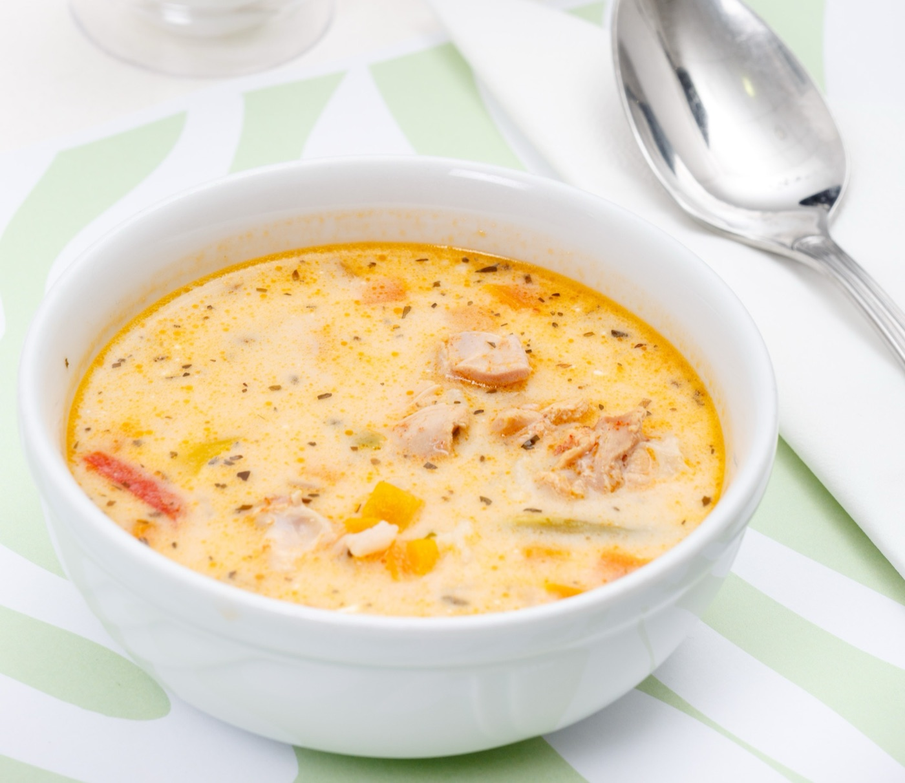
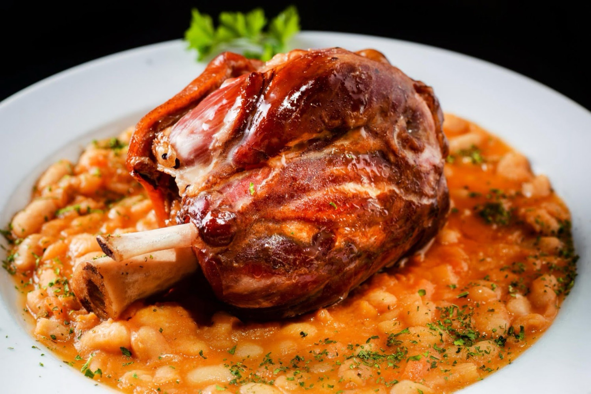
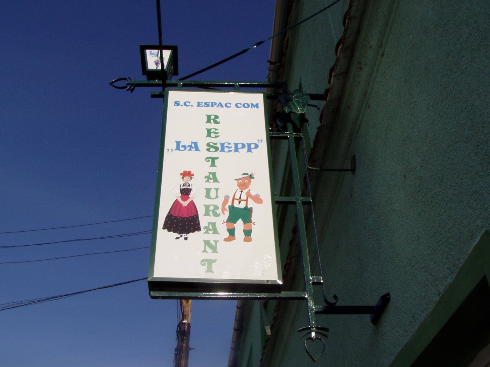
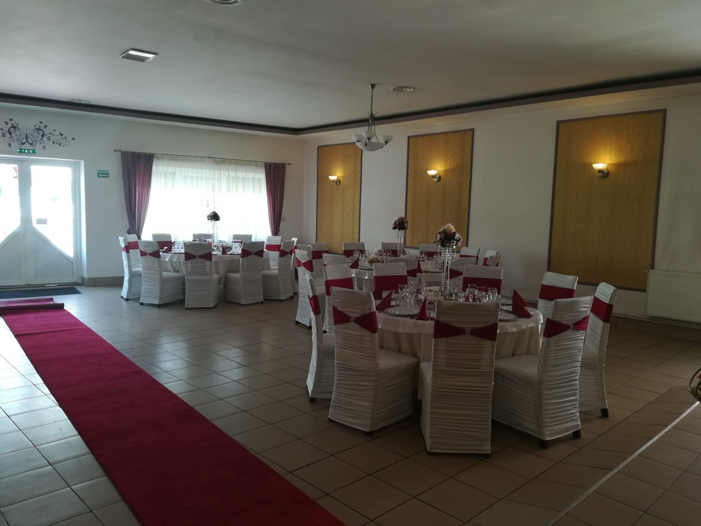
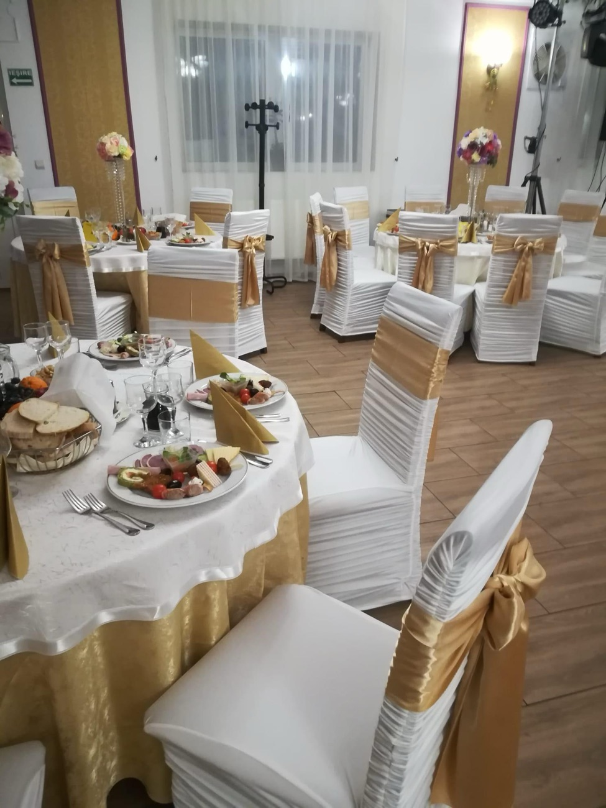
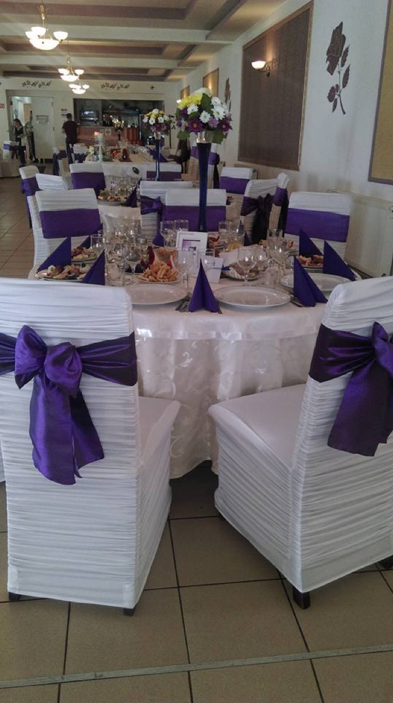
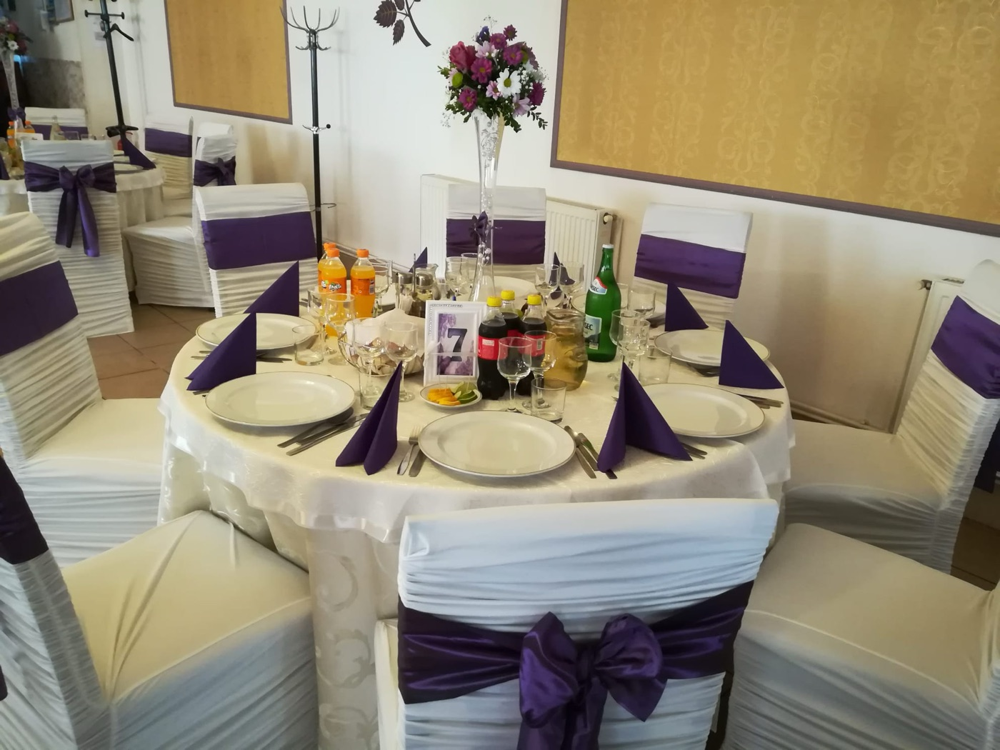

Supă cremă de pui De casă
Supă catifelată de pui, cu legume și verdeață, servită fierbinte — reconfortantă în orice zi.

La marginea Sibiului, pe Strada Livezii, La Sepp gătește de ani buni bucătărie românească și internațională — ciorbe fierbinți, fripturi și un meniu al zilei care te aduce înapoi. Iar când ai o sărbătoare, sala noastră e gata pentru ea.
„La Sepp” poartă numele unui personaj drag — nemțoaica și neamțul din firmă, în port săsesc, veghează de la intrare de mulți ani. Numele spune totul: aici gătim ca acasă, cu porții generoase și gusturi pe care le știi din copilărie.
În farfurii găsești bucătărie românească și internațională: ciorbe și supe fierbinți, fripturi la grătar, ardei umpluți și sarmale, dar și preparate mai fine — tartar, carpaccio sau mușchi de vită. Iar meniul zilei se schimbă și e mereu proaspăt.
Avem o terasă de vară, loc de joacă pentru copii și parcare — un loc unde vii cu familia, cu colegii de la firmă sau pentru o masă mare de sărbătoare.

Trei motive pentru care sibienii se întorc la noi.
Ciorbe și supe fierbinți, fripturi, ardei umpluți și meniul zilei — mâncare gătită cu grijă, în porții pe care nu le termini singur.
Nuntă, botez, aniversare sau masă de firmă — o sală generoasă de până la 250 de locuri, aranjată așa cum vrei tu.
Terasă de vară pentru zilele bune, loc de joacă pentru cei mici și parcare la îndemână. Se plătește cu cardul și cu tichete de masă.
Câteva dintre preparatele și de la mesele pe care le-am pregătit la La Sepp.

Sala de evenimente
Platouri de eveniment
Aranjare de nuntă
Sala noastră a găzduit multe povești frumoase — de la nunți și botezuri la aniversări și mese de firmă. O aranjăm după culorile și tema ta, cu fețe de masă, funde și decor.
Ai o masă mare în familie sau vrei un loc unde să sărbătorești fără griji? Spune-ne ce pui la cale și ne ocupăm noi de rest — meniu, aranjare și servire.
Câteva dintre recenziile lăsate de cei care ne-au trecut pragul.
„Am fost invitat și a fost foarte bine. Mâncarea și servirea au fost excelente. Restaurantul este frumos și serviciul de asemenea!”
„Servire și ambient excelente. Personal remarcabil.”
„Mâncare bună și atmosferă plăcută.”